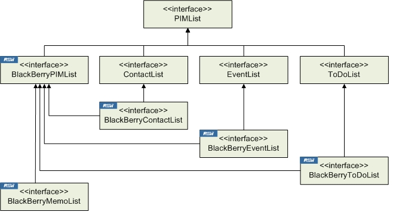
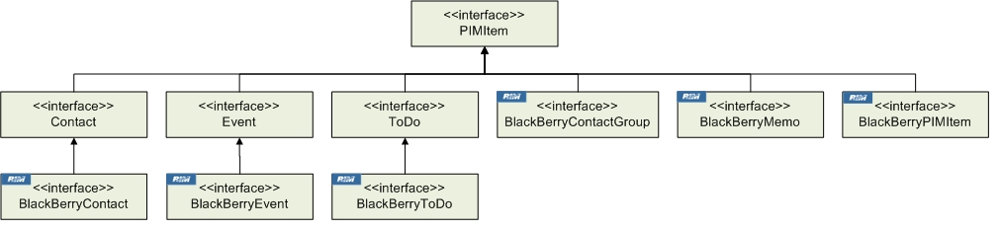
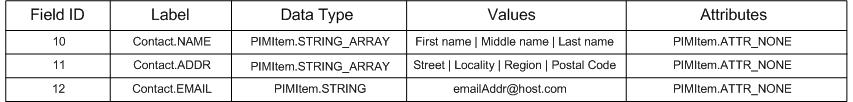

|
|||||||||
| PREV NEXT | FRAMES NO FRAMES | ||||||||
This document contains the packages required to access personal information management (PIM) data on a BlackBerry® device. PIM data is defined as information included in address books, calendars, tasks, and memopads. The BlackBerry device fully supports the J2ME PIM implementation established in JSR 75, with a number of custom extensions. For more information, see the following sections:
The javax.microedition.pim package, which was introduced with JSR 75, provides a number of interfaces that allow you to access PIM data on a compliant mobile device. PIM data is organized into PIM lists, items, and fields. PIM lists are databases that contain all PIM items that can be accessed on a device. PIM lists maintain categories, which are logical groupings for the PIM items contained in the list. Each PIMList object can support zero or more categories. Categories are represented by unique String names.

A PIMItem object represents a collection of data for a single PIM entry. A PIM item is created from a particular PIM list and is associated with that list for the life of the item. PIM items can have its data imported and exported using standard byte based formats. Each implementing class defines what formats can be imported and exported for that item.

A PIMItem is a grouping of related fields. Each field consists of a label, a data type, value(s), and attribute(s). Several examples are shown in the following table:

For information on specific field attributes specifically for BlackBerry devices, see the section on using BlackBerry PIM extensions.
For background information on PIM, see the JSR 75 specification.
The BlackBerry Java SDK API contains an interface that extends PIMItem for each of the core BlackBerry PIM applications:
| BlackBerry application name | PDAP interface name |
|---|---|
| Address Book | BlackBerryContact |
| Calendar | BlackBerryEvent |
| MemoPad | BlackBerryMemo |
| Tasks | BlackBerryToDo |
To add a PIM item to a PIM list, invoke the relevant create method for the list type. For example, to add a contact to a contact list, create the contact instance, add the contact names, and invoke PIMItem.commit().
Contact contact = contactList.createContact();
String[] name = new String[contactList.stringArraySize(Contact.NAME)];
contact.commit(); |
You must first decide which labels, data types, and attributes to set, and then add those fields to the PIM item. For detailed information and sample code, see the section entitled "Explicit Field Use with Field Checking" in javax.microedition.pim.Contact, javax.microedition.pim.Event, and javax.microedition.pim.ToDo.
Invoke the relevant PIMItem getXXX() method to retrieve a particular value from a field. Always invoke PIMItem.countValues() to check if a field has a value before invoking getXXX(), and check if the fields are supported before using them.
Note: Invoking getXXX() when countValues() returns zero (0) throws a RuntimeException (such as IndexOutOfBoundsException).
Click for code sample: Retrieve field data from PIM items
// Ensure that the NAME field has a value before invoking
// getStringArray().
if (contact.countValues(Contact.NAME) > 0)
{
String[] name = contact.getStringArray(Contact.NAME, 0);
}
// Get EMAIL.
if (contact.countValues(Contact.EMAIL) > 0)
{
String email = contact.getString(Contact.EMAIL, 0);
}
// Get the work phone.
final int numValues = contact.countValues(Contact.TEL);
for (int index = 0; index < numValues; index++)
{
final int curAttributes = contact.getAttributes(Contact.TEL, index);
if ((curAttributes & Contact.ATTR_WORK) == Contact.ATTR_WORK)
{
String phoneWork = contact.getString(Contact.TEL, index);
}
}
// Get the birthday.
if (contactList.isSupportedField(Contact.BIRTHDAY))
{
long bday = contact.getDate(Contact.BIRTHDAY, 0);
}
// Get the access class.
if (contactList.isSupportedField(Contact.CLASS))
{
int class = contact.getInt(Contact.CLASS, 0);
} |
To remove a particular PIM item, call the remove item method on the appropriate PIM list.
Click for code sample: Remove PIM items
if(contact != null)
{
try
{
contactList.removeContact(contact);
}
catch(PIMException e)
{
Dialog.alert("Contact does not exist");
e.printStackTrace();
}
} |
Exporting is converting a PIMItem to a stream of bytes that can be imported by another PIM application. To export PIM data to a supported serial format, invoke PIM.toSerialFormat(PIMItem, OutputStream, String, String), passing as arguments an OutputStream to which the serialized PIMItem is written, the character encoding to use when writing to the output stream, and the supported data exchange format to convert to. Supported character encodings include "UTF8," "ISO-8859-1," and "UTF-16BE."
Click for code sample: Export PIM Iitems
ByteArrayOutputStream outputStream = new ByteArrayOutputStream();
Enumeration e = contactList.items();
while (e.hasMoreElements())
{
Contact contact = (Contact) e.nextElement();
pim.toSerialFormat(contact, outputStream, encoding, supportedSerialFormats[0]);
}
} |
To import a PIMItem, invoke fromSerialFormat(InputStream, String), passing as arguments the InputStream from which the serialized PIMItem is written, and the character encoding to use. Supported character encodings include "UTF8," "ISO-8859-1," and "UTF-16BE."
Note: Only one PIMItem object can be decoded using a single fromSerialFormat(InputStream, String) invocation.
Click for code sample: Import contact items from an input stream
public void importContacts(InputStream inputStream, String transferEncoding, ContactList contactList)
{
PIMItem[] items = null;
try
{
if(transferEncoding.equals("base64"))
{
Base64InputStream b64is = new Base64InputStream(inputStream);
items = pim.fromSerialFormat(b64is, "UTF-8");
}
else if (transferEncoding.equals("quoted-printable"))
{
QuotedPrintableInputStream qpis = new QuotedPrintableInputStream(inputStream);
items = pim.fromSerialFormat(qpis, "UTF-8");
}
else
{
InputStream is = new InputStream();
items = pim.fromSerialFormat(is, "UTF-8");
}
if (items != null)
{
// For each imported PIM contact item, import it into the contact list.
for (int i = 0; i < items.length; i++)
{
Contact contact = (Contact) (items[i]);
Contact returnedContact = contactList.importContact(contact);
// Ensure that the contact is saved into the list.
contact.commit();
}
}
}
catch(Exception e)
{
e.printStackTrace();
}
} |
Beginning with BlackBerry Java SDK 4.5, you can access multiple calendars on a BlackBerry device. You can retrieve the names of each of the calendars on a device by invoking PIM.listPIMLists(pimListType), passing PIM.EVENT_LIST as the argument.
String[] eventLists = pim.listPIMLists(PIM.EVENT_LIST); |
The listPIMLists() method returns a String array containing the names of each calendar. The first String item returned from listPIMLists() is the default calendar.
Services changes on the device can cause the default calendar to change. Implement ListChangeListener and specify it to BlackBerryPIM.addListChangeListener() to be notified when the default calendar changes. The defaultListChanged(listType) method is invoked when the default PIM list of the specified type changes.
You can open a PIM list that combines multiple calendars on a BlackBerry device by invoking one of the BlackBerryPIM.openUnifiedPIMList() methods.
Beginning with BlackBerry Java SDK 5.0, you can access multiple contact lists on a BlackBerry device. Each contact list has a name and a UID that you can use to access the list. You can change the contact list name by editing the name of the service associated with the name by using the BlackBerry Desktop Manager. You cannot change the UID.
Service changes on the device can cause the default contact list to change. Implement ListChangeListener and specify it to BlackBerryPIM.addListChangeListener() to be notified when the default contact list changes. The defaultListChanged(listType) method is invoked when the default PIM list of the specified type changes.
You can retrieve the names of the contact lists on the BlackBerry device by invoking PIM.listPIMLists(pimListType), passing PIM.CONTACT_LIST as the argument.
String[] contactLists = pim.listPIMLists(PIM.CONTACT_LIST); |
The listPIMLists() method returns a String array containing the names for each contact list. The first String item returned from PIM.listPIMLists() is the default contact list. You can retrieve the UID of a contact list by invoking BlackBerryPIMList.getPIMListUID().
You can open a contact list by its name by invoking PIM.openPIMList(pimListType, mode, name). You can open a contact list by its UID by invoking BlackBerryPIM.openPIMList(pimListType, mode, uid).
You can open a PIM list that combines multiple contact lists on a BlackBerry device by invoking one of the BlackBerryPIM.openUnifiedPIMList() methods.
Since BlackBerry Java SDK 6.0, you can create contact lists by invoking BlackBerryPIM.createPIMList(int type, String name). Currently, the type specified in createPIMList() must be PIM.CONTACT_LIST or PIMException is thrown. Note the following about creating contact lists:
You can also remove contact lists by invoking one of the BlackBerryPIM.removePIMList() methods. Currently, these methods support PIM lists only of type PIM.CONTACT_LIST. Note the following about removing contact lists:
In addition to fully supporting the features in the javax.microedition.pim package, a number of BlackBerry PIM extensions are found in the net.rim.blackberry.api.pdap package. The RIM extensions to the PIM API allow access to BlackBerry-specific features, including:
All BlackBerry-specific fields that are not supported by JSR 75 are defined in the relevant BlackBerrryContactList, BlackBerryToDoList, or BlackBerryEventList interface.
MemoPad is a BlackBerry application not supported by the J2ME PIM implementation. See BlackBerryMemoList for more information and sample code for using the MemoPad.
To set recurrence for ToDo items, invoke BlackBerryToDo.setRepeat(), passing in a RepeatRule object as a parameter to specify the recurrence. To get information on existing ToDo recurrence, invoke BlackBerryToDo.getRepeat(), which returns a RepeatRule object.
To display the standard user interface for adding contacts to a contact list, invoke the choose() method for the BlackBerryContactList.choose() method.
Click for code sample: Display a standard user interface for a contact list
public Contact askUserToChooseContact()
{
PIM pim = PIM.getInstance();
BlackBerryContactList contactList = (BlackBerryContactList)
pim.openPIMList(PIM.CONTACT_LIST, PIM.READ_WRITE);
return contactList.choose();
} |
You can design your application to allow BlackBerry device users to perform remote GAL lookups for contacts if your system uses a BlackBerry Enterprise Server (BES) as part of its messaging infrastructure. GAL lookups are performed by invoking BlackBerryContactList.lookup(). This method is overridden to accept either a Contact or a String as the search parameter. The items() method of the RemoteLookupListener object that is specified in the lookup() method is invoked when a result is returned from the BES.
Click for code sample: Do a GAL lookup
final class RemoteLookupDemo implements RemoteLookupListener
{
public void items(Enumeration results)
{
int count = 0;
while (results.hasMoreElements())
{
results.nextElement();
++count;
}
System.out.println("Number of Contacts: " + count);
}
try
{
//retrieve an instance of PIM, open the contact list for read/write permissions
BlackBerryContactList contactList = (BlackBerryContactList)
PIM.getInstance().openPIMList(PIM.CONTACT_LIST, PIM.WRITE_ONLY);
//use the lookup method specifying the partial name
//to perform the remote address lookup on
contactList.lookup("Joe", this);
}
catch (Exception ex)
{
System.out.println(ex.toString());
}
} |
You can launch PIM applications by using the BlackBerry Invoke API. For more information, see the Application Integration overview.
|
Copyright 1999-2011 Research In Motion Limited. 295 Phillip Street, Waterloo, Ontario, Canada, N2L 3W8. All Rights Reserved. |
Legal |